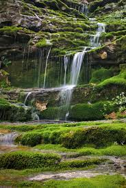
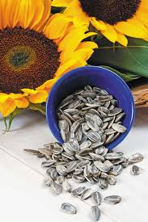

INDIAN TRADITION SEEDS
In many traditional cultures around the world, seeds have long been used for both practical and spiritua

WATERTALL FIELD SEEDS
This kind of seeds always grow near to the waterfall.this seeds are occur skin related diseases

SUNFLOWER SEEDS
They are also believed to have medicinal properties and were used to treat a variety of ailments

SESAME SEEDS
Sesame seeds are widely used in traditional cuisines around the world, including in India, Africa, and the Middle East